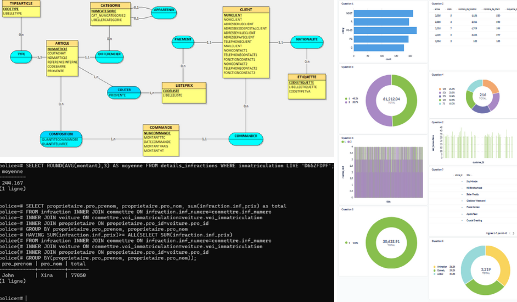
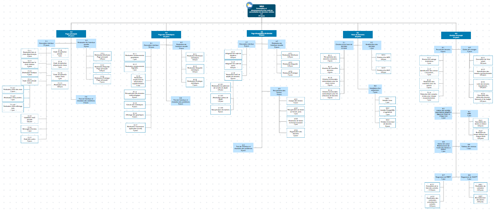
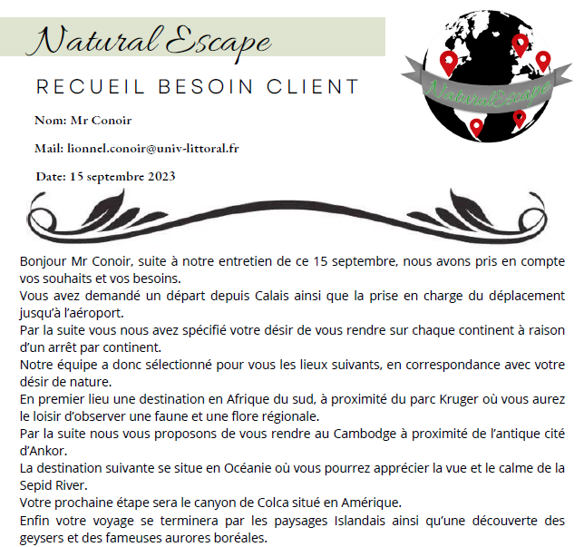
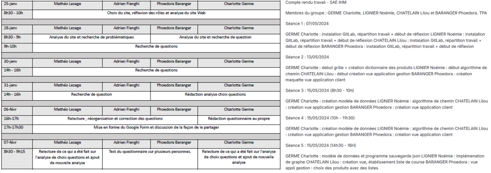
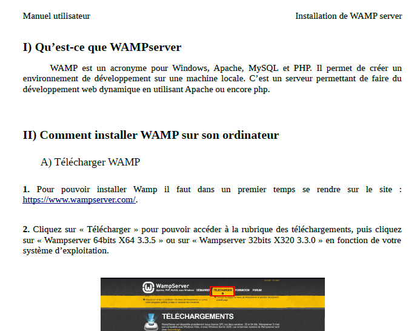
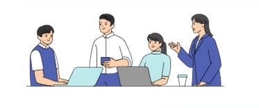

Communication et gestion de projets professionnel
Durant mon année en BUT Informatique ainsi que mon alternance, j’ai pu apprendre à travailler et à collaborer avec une équipe pour pouvoir mettre en place des projets et organiser des temps de travail.
Visualisation des données
- Durant un projet et des travaux pratiques effectués en cours, j’ai pu manipuler des bases de données en effectuant différentes requêtes permettant de visualiser des données précises.
- Réaliser ces requêtes permet l’affichage de données, permettant ainsi aux utilisateurs de mieux comprendre quels peuvent être les enjeux ou les impacts.


Organiser un projet
- Lors d’un projet réalisé dans le cadre d’une SAE, j’ai pu développer un jeu de TicTacToe. Nous avons réalisé ce projet en groupe de quatre.
- Deux joueurs peuvent jouer en réseau. Il y a une communication client/serveur par Socket TCP/IP. Lorsqu’un joueur joue, l’autre voit alors la nouvelle grille s’afficher et peut jouer ensuite.
- Mes compétences en dévellopement se sont développpées en apprenant et en mettant en pratique le principe de Socket.
Communiquer avec le client
- Durant un projet web, j’ai pu développer la communication écrite en communiquant efficacement avec les différents acteurs du projet.
- Pour la réalisation du projet, avec mon équipe, nous avons communiqué avec le client et réalisé un recueil de besoin pour pouvoir mener à bien le projet.
- Dans le cadre de mon alternance, j’ai également communiqué avec différents utilisateurs afin de recenser des informations nécessaires pour la mise en place d’un projet.


Répartition des tâches réalisées
- J’ai pu développer tout au long de mes projets le travail d’équipe.
- L’objectif principal a été de répartir les rôles à chaque membre de l’équipe pour qu’un projet puisse aboutir et que l’organisation soit optimale et organisée.
Communiquer avec un utilisateur
- Lors de projet réalisé en cours, j’ai pu mettre en place des notices d’utilisation. Faire ces notices m’a permis d’accroître ma communication écrite.
- J’ai également réalisé des vidéos permettant d’expliquer des projets, ou la mise en place et l’utilisation d’outils spécifiques.


Communication dans une équipe
- Lors de mon alternance, j’ai pu réaliser des projets avec mes collègues et effectuer différentes interventions.
- J’ai donc discuté avec mes collègues et ai donc réparti les différentes tâches à réaliser. J’ai pu communiquer avec eux pour mener à bien des projets ainsi que pour comprendre le fonctionnement de l’entreprise ou de logiciels.
- Dans le cadre de ma formation, j’ai également été amené à communiquer avec mes camarades pour réaliser des projets et se tenir au courant de l’avancé.